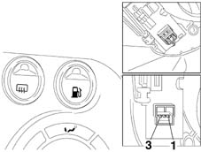

1058AD CHECK GAS/PETROL SELECTION BUTTON
- Path
- Test > 10 ENGINE UNIT > 1058 GAS CIRCUIT > 1058AD CHECK GAS/PETROL SELECTION BUTTON
- Kind
- test / check procedure
- Applies to
- engines: 1.6 16v; all production periods; only with equipment: BIPOWER
- Interactive page
- https://sloeber94.github.io/elrnDB-fMltpl/en/#/186003433
Applies to: engines: 1.6 16v; all production periods; only with equipment: BIPOWER
- Disconnect the gas/petrol selection button and set the tester to Ohmmeter mode. Connect the device across pins 1 and 3 and check that when the selector button is set to Gas (button released), the contacts are open while when the button is set to Petrol (button pressed), the contacts are closed.
